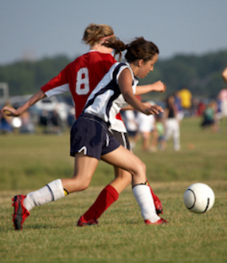

NORTHSIDE YOUTH SOCCER LEAGUE


About NYSL
Mission
To support young athletes living in Chicago´s northside neigborhoods, who have an interest in
learning and playing soccer, with oppotunities to learn and practice skills related to the game of
soccer, specifically those skills around team cooperation and good sportsmanship.
learning and playing soccer, with oppotunities to learn and practice skills related to the game of
soccer, specifically those skills around team cooperation and good sportsmanship.
Vision
The Northside Youth Soccer League aspires to develop strong, well-rounded, and mindful
athletes through the building of character,
self discipline, and leadership.
athletes through the building of character,
self discipline, and leadership.
General Information
The Northside Youth Soccer League was established in 1995 to provide athletes residing in
Chicago´s northside neighborhoods an environment in wich to learn and play soccer. To be a
member of NYSL, you must be between the ages of 4-12 and reside in Chicago northside
neighborhood. NYSL is ran by a small full-time staff, and relies on the generous volunteer time of
parents and previous league members.
Chicago´s northside neighborhoods an environment in wich to learn and play soccer. To be a
member of NYSL, you must be between the ages of 4-12 and reside in Chicago northside
neighborhood. NYSL is ran by a small full-time staff, and relies on the generous volunteer time of
parents and previous league members.